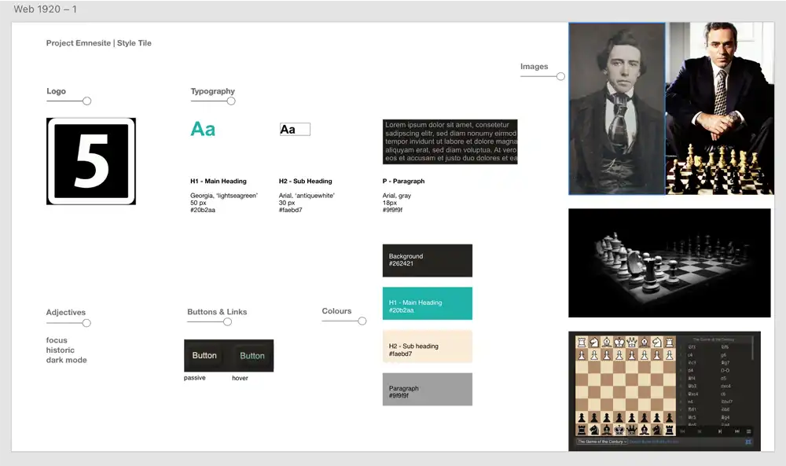
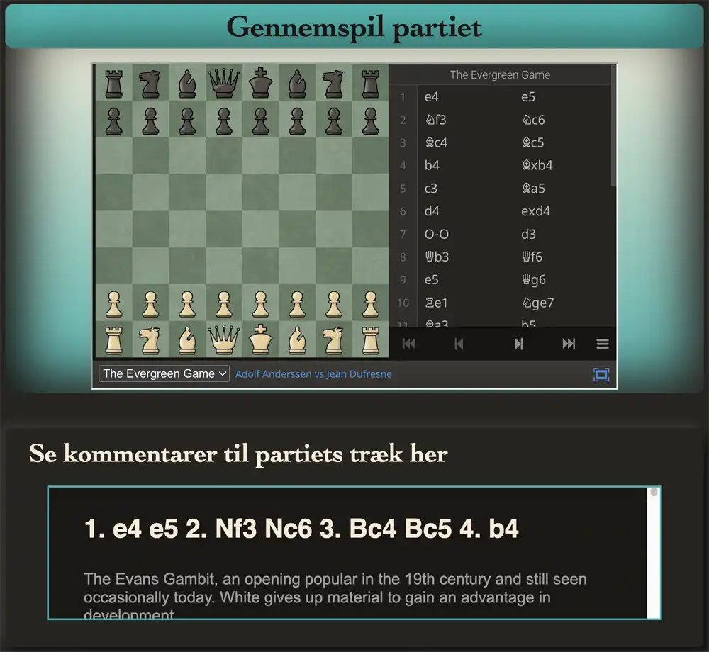

På uddannelsens andet tema fik vi til opgave at bygge et emnesite med emne efter eget ønske. Mit site omhandler nogle "udødelige" skakpartier.
TEMA 2: EMNESITE
-
-
Vi blev fra start præsenteret for fire overordnede stilarter eller genrer indenfor webdesign. Nogle af disse har definerede understilarter, der ses af listen nedenfor:
Modernisme
- Den digitalt modernistiske stil
- Flat Design
- Neomorphism - Soft UI
- Minimalisme
Postmodernisme
- Brutalisme / Anti Design
Retro design
- Video Game Style
- 90'er Retro Design
- Hipster Style
- Swiss Design m. fl.
Futurisme
Jeg valgte at beskæftige mig med den modernistiske stil "Neomorphism - Soft UI", der kort vil blive beskrevet i det følgende.
-
Den neumorfistiske stil er et moderne digitalt design, der indenfor en ganske kort periode så meget stor popularitet blandt webdesignere. De fleste markerer stilens begyndelsespunkt med Oleksandr Plyutos designkoncept fra 2020, som han ganske vidst selv kaldte "Skeumorph Mobile Banking":
Det neumorfistiske udtryk er egentlig en sammensmeltning af to modsatrettede strømninger, nemlig skeuomorfismen og flat design.
Skeuomorfismen er det fænomen at man bruger allerede kendt teknologi som metafor i ny teknologi; fx at en digital knap ligner en tredimensionel, fysisk knap.
Flat Design er et oprør mod denne skeuomorfisme: minimalistiske, todimensionelle knapper er nok.
Neumorfismen er imidlertid en 'ny' skeuomorfisme, der trækker på greb fra begge stile. Som Plyuto selv filosoferer under sit designkoncept på dribbble.com:
"Hey All. Let's imagine that we live in a dimension where skeuomorph is still alive and continued its evolution in mobile interfaces. What would applications look like then? Here is my vision. Want more?"
Plyutos bud på en futuristisk skeuomorfisme er altså et minimalistisk plastic-look. En flad tredimensionalitet, der ligner de papirstynde stykker plastic ens apple-produkter ankommer i.
-
A. Skitser
B. Styletile
C. Moodboard
D. Endelig forside

-
Koncept
Jeg valgte at lave et site om fem ikoniske skakpartier. Disse blev tildelt hver sin underside, der kunne styles i relation til partiet. På alle undersider er der en kort præsentation af den vindende spiller samt en begrundelse for valget af netop dette parti. Nedenunder er der mulighed for at gennemspille partiet på et til undersiden stylet skakbræt der er embedded fra sitet lichess.org. Her er det muligt at gennemspille partiet træk for træk, og se kommentarer til udvalgte træk og træksekvenser i en scrollboks, placeret umiddelbart under skakbrættet.
Layout

Undersiderne er opbygget på præcis samme måde: Navigation, overskrift, underoverskrift, præsentationsbillede, boks med “Hvem?” og “Hvorfor dette parti?”, unikt stylet skakspil (embedded fra lichess.org) med partiets træk, og en scrollboks med kommentarer til udvalgte træk og træksekvenser. Jeg forestiller mig at personen der aktivt vælger at klikke sig ind på et site af denne art, ønsker - og har mulighed for - at fordybe sig i partierne. Derfor har jeg haft en ide om minimalistisk “dark-mode” som overordnet rettesnor.
Typografi og tekstlayout
Jeg benytter mig overordnet af to fonte på sitet; en serif og en sans-serif. Overskrifter er sat med cambria-familien, og findes i farverne “antiquewhite” (#faebd7) og “lightseagreen” (#20b2aa). Brødtekst er skrevet i grå helvetica (#9f9f9f). Jeg har ikke meget tekst på mit site, og det, der er, har jeg forsøgt at gøre spiseligt ved hjælp af korte sætningslængder og opdeling af teksten. I kommentarboksene til partierne er der ganske meget tekst. For at kunne se det omtalte parti OG kommentarerne til trækkene på samme tid, valgte jeg at placere kommentarerne i en scrollboks.
Billeder
Jeg har 3 typer billeder på sitet. 1. Portrætter af de omtalte spillere, 2. præsentationsbilleder samt signaturer fra spillerne. Der er ikke foretaget selvstændig farvejustering af disse billeder men jeg har de fleste steder forsøgt at få de interaktive skakpartier til at matche farverne på præsentationsbilledet.
Gestaltprincipper
Min navigation placerer sig på en horisontal linje og link-knapperne ligner - og ligger nær - hinanden. Vi aflæser altså at disse har en relation. Jeg indrammer indholdsmæssigt relateret information i kasser med neomorfiske kanter for at hjælpe brugeren med at forstå at dette hører sammen.
Kontraster
Jeg arbejder i en gråtone-skala: cremehvide ("antiquewhite") og grå tekster på mørk baggrund. Jeg har kun én accentfarve i form af en turkis ("lightseagreen"), der bruges til at tiltrække opmærksomhed, og til at vise at noget har affordance; ved hover på links i navigationslinjen, animeres teksten med en gradient af denne farve.
Refleksion
Embeddingen af skakpartierne gjorde det simpelt at style parametrene i html, så hver underside / parti fik en unik kombination af brikker og bræt. Det er centralt for mit design at det tilgås i afdæmpet belysning da de neomorfiske kontraster er små, og fordi der er tale om et ganske mørkt design. Dette bygger på en antagelse om at den interesserede bruger vil fordybe sig i indholdet. Jeg arbejdede dog også på at lave en (nice to have) day/night-toggler, som jeg måtte droppe pga. mangel på tid (og evner). Det kan desuden nævnes at emnesitet er informationstungt, og at der ikke er mange muligheder for at interagere med det. Det ligger med andre ord op til konsumption.